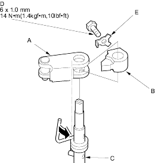
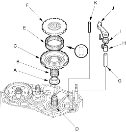

Mainshaft Holder set, 07PAB-0010000
- Install the park lever (A) and park lever stop (B) on the control shaft (C), then install the lock bolt (D) with a new lock washer (E). Do not bend the lock tab of the lock washer until step 19.

- Lubricate the following parts with ATF:
- Splines of the countershaft and park gear.
- Threads of the countershaft and old locknut.
- Old conical spring washer and areas where the park gear contacts the conical spring washer.
- Install the countershaft 1st gear collar (A), needle bearing (B) and countershaft 1st gear (C) on the countershaft (D).

- Install the one-way clutch (E) in the direction shown in the countershaft 1st gear.
- Align the park gear splines with those on the countershaft, then push the park gear (F) onto the countershaft by hand.
- Install the park pawl shaft (G), pawl shaft collar (H), park pawl spring (I), park pawl (J) and stop shaft (K) on the transmission housing, then engage the park pawl with the park gear.